VI: Card indexBlank Iris Card EXมาอีกแล้วกับการ์ด set ใหม่
Iris card พวกนี้หาซื้อได้เฉพาะใน
Cash shop เท่านั้น ด้วยราคาที่...

แต่ด้วยความ
แตกต่างอันชัดเจน ระหว่าง EX และการ์ดธรรมดา การ์ดจากแคชพวกนี้มีศักยภาพสูงกว่าในทุกๆด้าน
ซึ่งคงจะมาเปลี่ยนสมดุลตลาดและการใ้ช้งานการ์ดต่อไปอีกในอนาคต
ดังนั้นผมเลยคิดว่า คงเป็นการดีที่จะให้เพื่อนๆได้รู้ถึงรายละเอียดของการ์ผม EX ไว้ก่อน โดย....
Set ที่ว่านี้ ถ้าเราเปิด
Card Holder ดูมันจะไปอยู่ที่หน้า 1,3-5,7 และ 9 ครับ (มี 6 set นั่นเอง ณ ตอนนี้)
###คาดว่ามันจะค่อยๆทะยอยมาทีละชุด (อิงจาก wiki ญี่ปุ่น) ดังนั้นผมก็จะค่อยๆ(อู้)ลงทีละนิดเช่นกันครับ
เริ่มจาก
หน้า 1 นั้นคือ set ที่ได้จากการสุ่ม
EX Blank Iris Card โดยไปแลกกับ
Dreamer Hallelujah ที่
Downtown หรือที่ Card Laboratory
หน้า 3 คือ set ที่ได้จากการสุ่ม
EX Blank Iris Card โดยไปแลกกับ
Dreamer Hallelujah ที่
Northan Promnardหน้า 4 คือ set ของตั๋วตุ๋น AA (Aquarian Age) ซึ่งจะผลุบๆโผล่ๆแล้วแต่ทางวันเน็ตเค้าแหละครับ
หน้า 5 คือ set ที่ได้จากการสุ่ม
EX Blank Iris Card โดยไปแลกกับ
Dreamer Hallelujah ที่
Iron city Upstairsหน้า 7 คือ set ที่ได้จากการสุ่ม
EX Blank Iris Card โดยไปแลกกับ
Dreamer Hallelujah ที่
Tonka Islandหน้า 9 คือ set ที่ได้จากการสุ่ม
EX Blank Iris Card โดยไปแลกกับ
Dreamer Hallelujah ที่
Fareast Republic cityหน้า 10 คือ set ที่ได้จากการสุ่ม
EX Blank Iris Card โดยไปแลกกับ
Dreamer Hallelujah ที่
Eastor capeงั้นเรามาดูกันเลยดีกว่า
รูปของการ์ดจะเรียงไล่จากมุมบนซ้าย ซึ่งเป็นระดับ
Super Rare[SR] และไล่ไปทางขวา เรียงบรรทัดจนถึง
Common[C] ใบสุดท้ายที่ด้านล่างขวา
Set EX ที่ 1 (Downtown&Card Lab)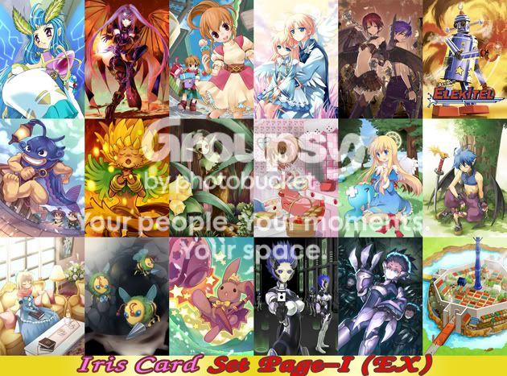
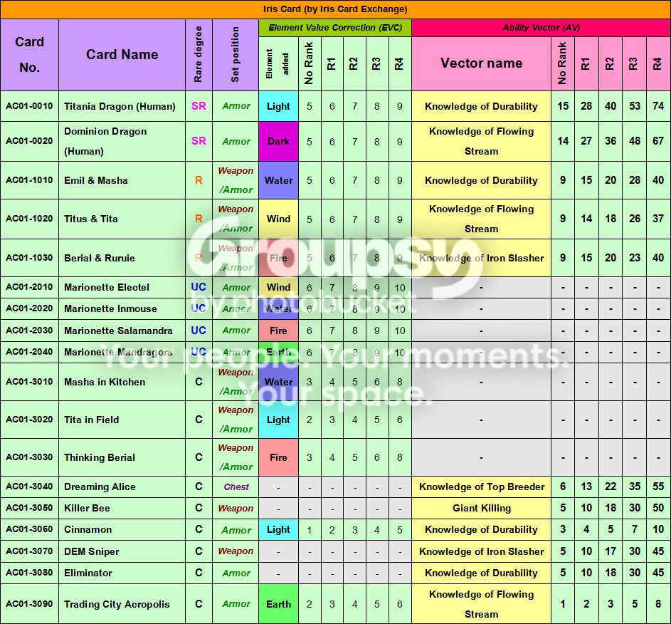
Set EX ที่ 2 (Northan Promnard)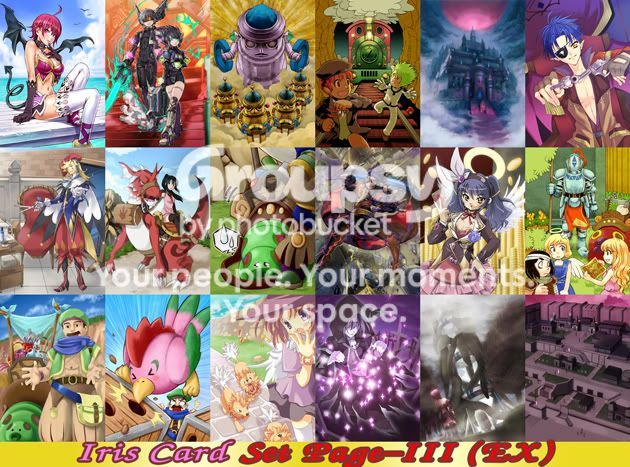
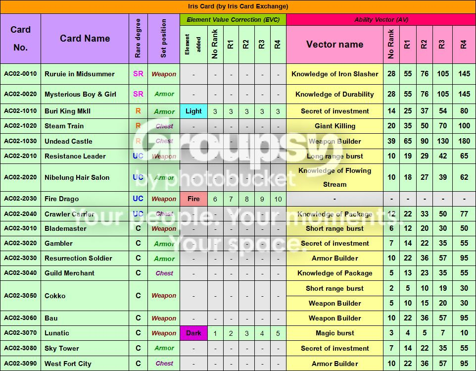
Set EX ที่ 3 (ตั๋วตุ๋นชุด Aquarian age)ชุดนี้เลื่อนลงไปล่างๆเลยครับ เนื่องจากมี
AV เฉพาะตัวมาก
Set EX ที่ 4 (Iron City Upstairs)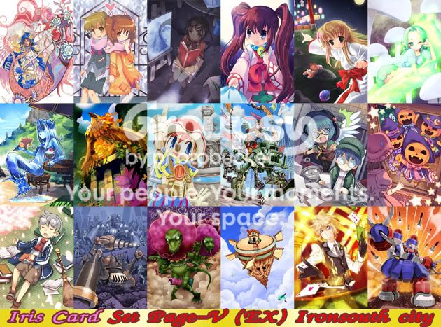
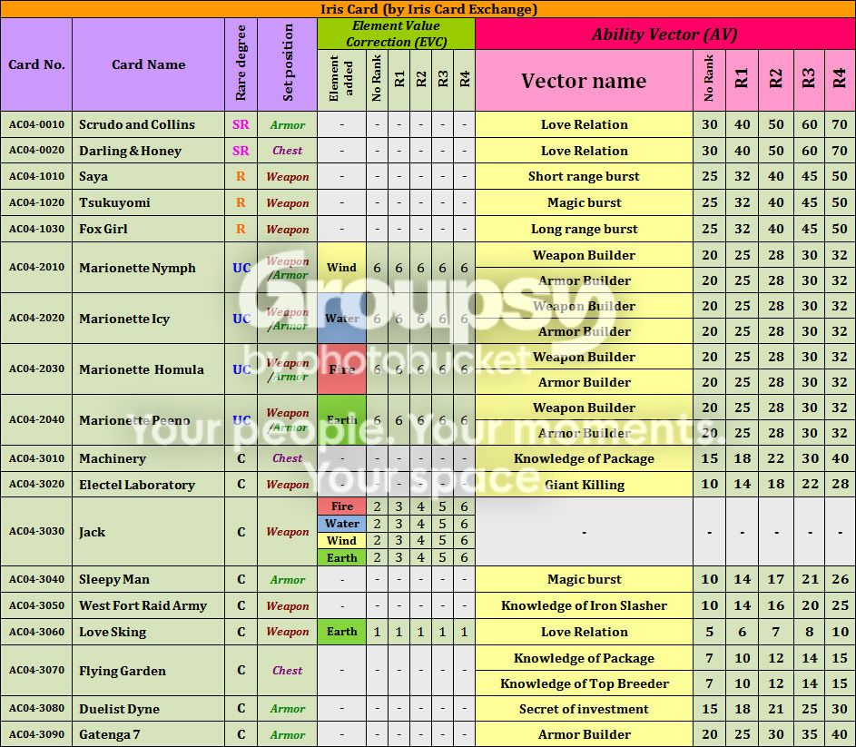
Set EX ที่ 5 (Tonka Island)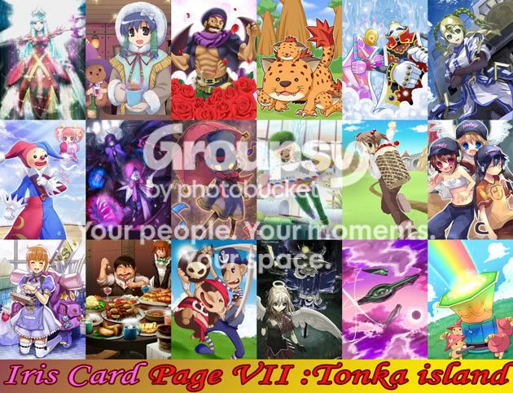
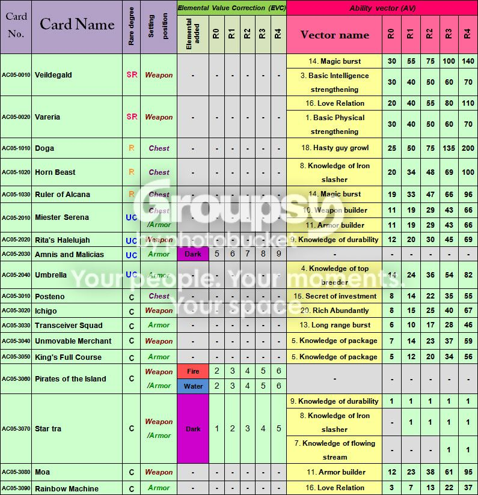
Set EX ที่ 6 (Fareast city)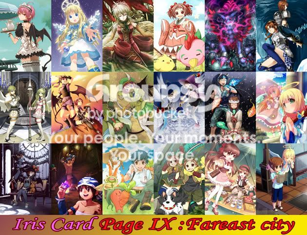
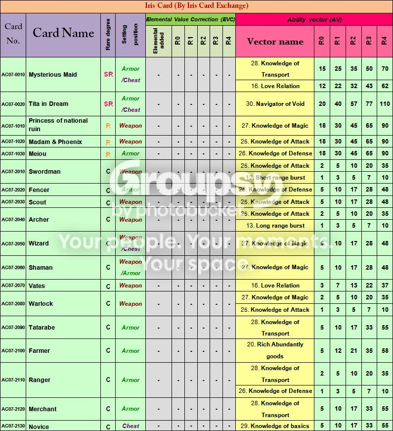
Set EX ที่ 7 (Eastor cape)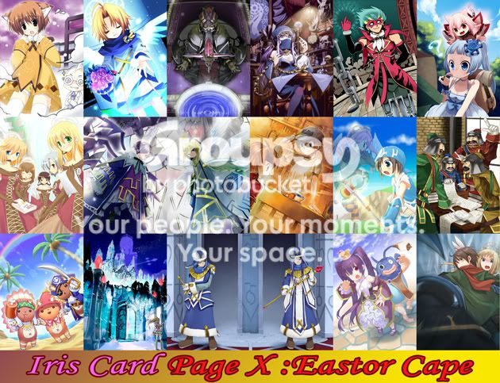
 Set EX ที่ 8 (Sourin cape)
Set EX ที่ 8 (Sourin cape)coming soooon...
Set EX ที่ 9 (Uptown)coming soooon...
Set EX ที่ 10 (Morg city)coming soooon...
Set EX ที่ 11 (Mai mai island)coming soooon...
Set EX ที่ 12 (Sky tower [Emil])coming soooon...
ถ้าท่านยังดูแล้วไม่เข้าใจ ลองกลับไปอ่าน Part II และ Part III ให้เข้าใจอีกทีด้วยน้อ
และสำหรับท่านที่อยาุกจะรู้ว่าแต่ละ
AV ที่เขียนไว้มันทำอะไรได้้บ้างล่ะก็ จิ้มข้่างล่างไปเลย~
V: Ability vector index[Click]รึถ้าขี้เกียจจิ้ม หรือไปนั่งงมหา
AV ที่ต้องการจะดู ผมก็ัึคัด
AV ส่วนที่ปรากฎในการ์ดด้านบนมาให้อีกแล้วขอรับ
จัดปาย~
##ตั้งแต่ EX หน้า 7 เป็นต้นไป AV ที่เพิ่มเข้ามาผมไม่ได้ใส่ไว้แล้วครับ เพราะเริ่มรกเกินไป ให้ตามลิ้งค์ข้างบนไปได้เลย มีหมายเลข AV กำกับแล้วน่าจะหาไม่ยากครับ
ในอนาคตคงจะเอา AV ด้านล่างนี่ออกไปด้วยเพราะตารางการ์ดมันจะิเพิ่มขึ้นเรื่อยๆอีก...


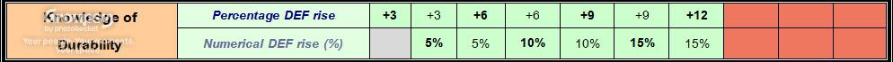


 Set EX ที่ 3 (ตั๋วตุ๋นชุด Aquarian age)
Set EX ที่ 3 (ตั๋วตุ๋นชุด Aquarian age)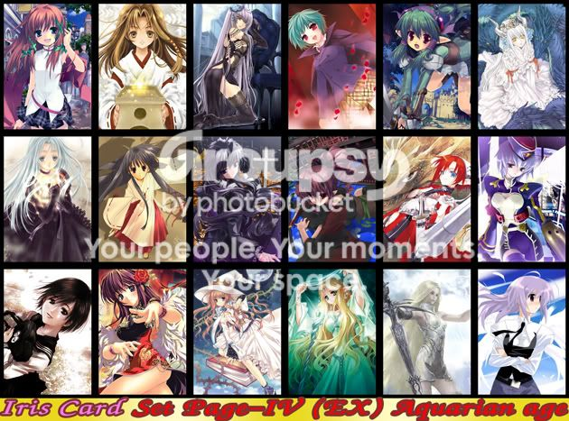
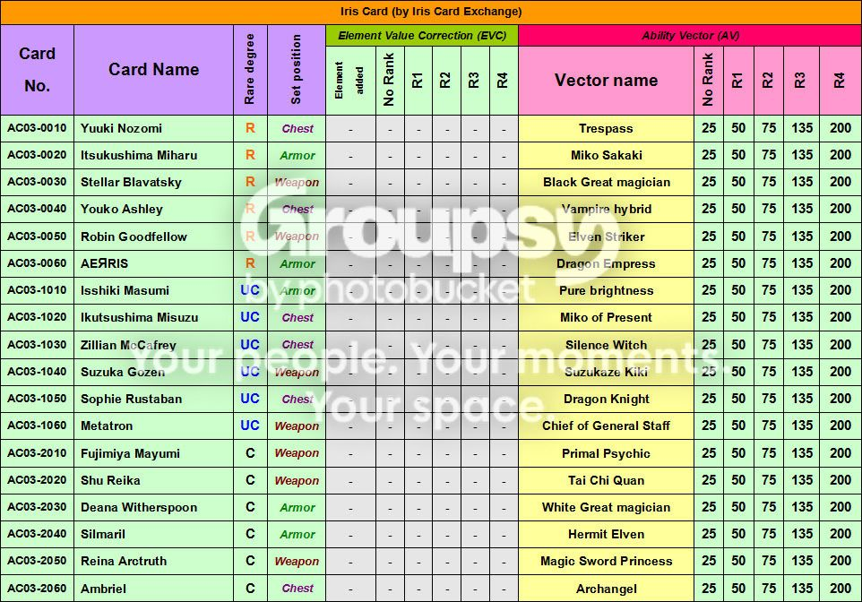
AV ที่เกี่ยวข้อง (ใบละ AV เลยนะเนี่ย แถมค่า Vector อลังการจริงๆ)
การ์ดแต่ละใบก็งามจนน่าเอาไปทำ AV จริงๆ <<(ไม่ใช้แล้วเว้ยย !!)
###คำเตือนอีกครั้ง
ตารางช่องแดง คือถ้าใส่การ์ดแล้วได้ RLv เำกิน มันจะ
ไม่แสดงผล นะครับ


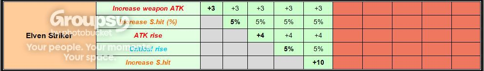


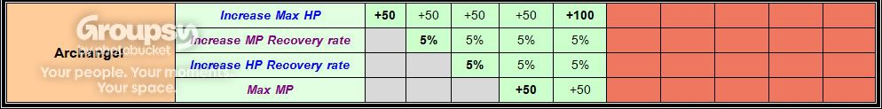